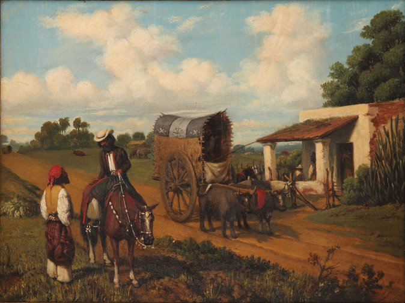
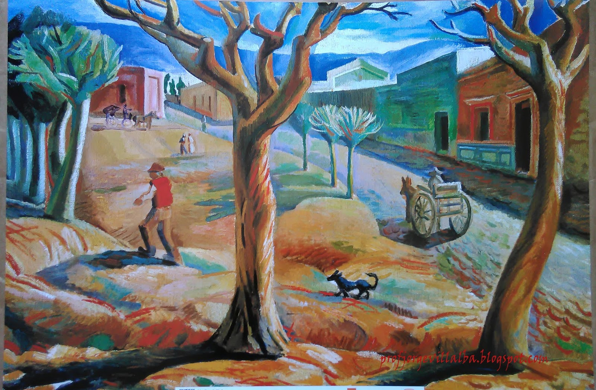
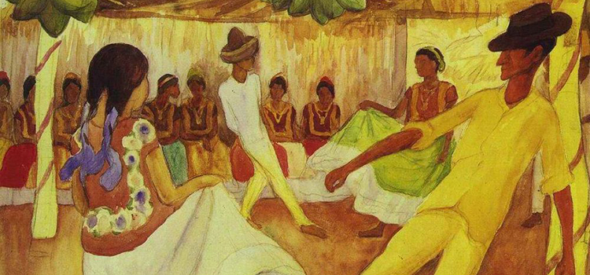
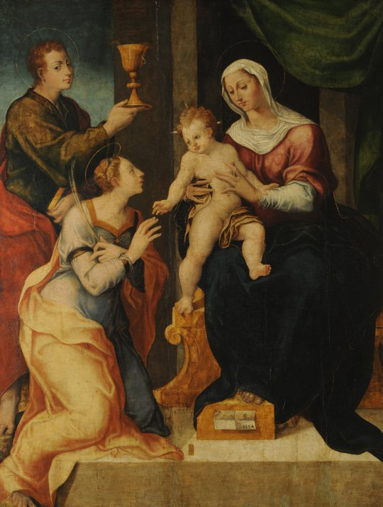
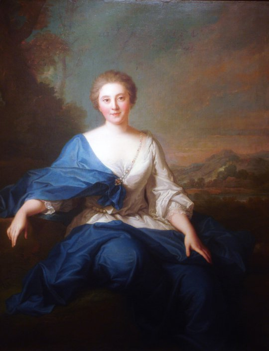
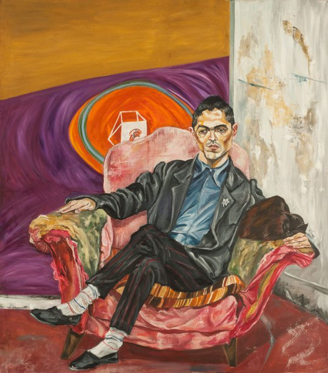
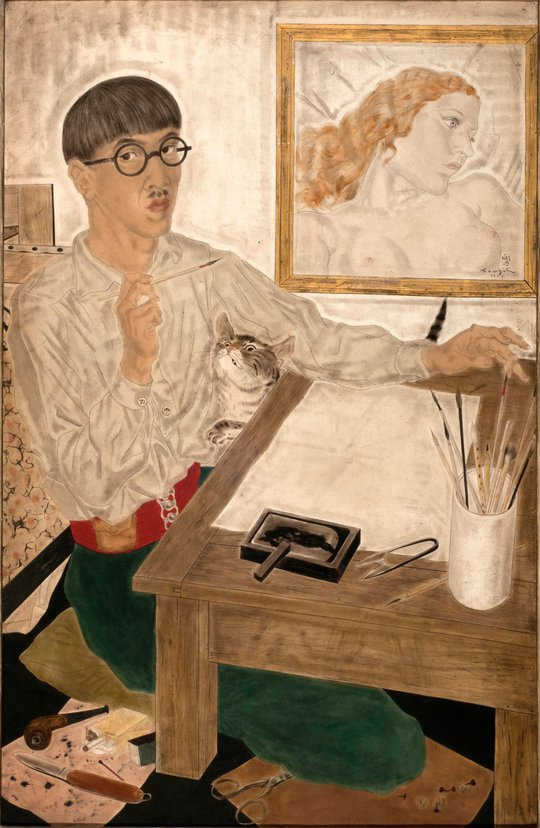

Algunas obras de ejemplo
Un alto en la Pulpería
Pueyrredón, Prilidiano 1860
Paisaje de San Juan
Lino Enea Spilimbergo ?
Baile en Tehuantepec
Diego Rivera 1928
Bodas místicas de Santa Catalina
Negróni, Pietro - (Zingarello) 1554
Procesión sorprendida por la lluvia

Fortuny y Marsal, Mariano 1867-1868
Crucifixión de Cristo

Cranach, Lucas - El viejo siglo XVI
Retrato de Mlle. Henault
Nattier, Jean-Marc 1727
Gustavo Marrone en su atelier
Schvartz, Marcia 1988
Autorretrato
Foujita, Léonard Tsuguharu 1931